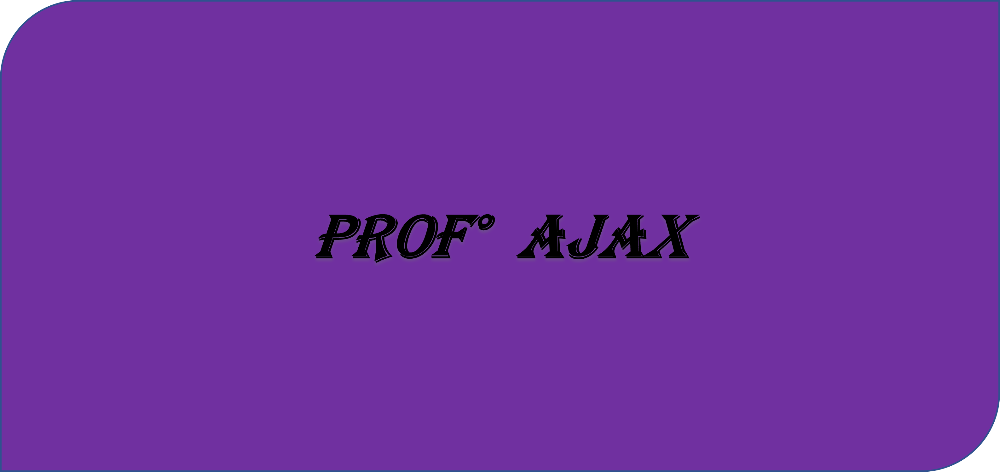

Python é uma linguagem de programação simples, fácil de aprender e
muito usada em diversas áreas, como desenvolvimento web, análise de dados e inteligência artificial.
Ela é versátil, possui uma sintaxe clara e tem uma grande biblioteca padrão, o que facilita o trabalho dos programadores.
Java é uma linguagem de programação orientada a objetos, amplamente utilizada para desenvolver
aplicativos de grande escala, sistemas corporativos e aplicativos móveis (especialmente para Android).
Criada por James Gosling na Sun Microsystems em 1995, ela é conhecida por sua portabilidade, permitindo
que programas escritos em Java sejam executados em diferentes plataformas sem necessidade de modificações
(graças ao "Write Once, Run Anywhere"). Java também tem uma grande comunidade e um vasto conjunto de
bibliotecas e frameworks.
(C-sharp) é uma linguagem de programação desenvolvida pela Microsoft, baseada no paradigma orientado a
objetos. Lançada em 2000, é amplamente utilizada no desenvolvimento de aplicativos para a plataforma.
NET, incluindo aplicativos de desktop, web, jogos (com Unity) e sistemas empresariais. C# é conhecida
por sua sintaxe simples, robustez e capacidade de integração com outras tecnologias, tornando-se uma das
linguagens mais populares para desenvolvedores que trabalham com o ecossistema Microsoft.
R é uma linguagem de programação e ambiente de software voltada para análise estatística,
manipulação de dados e visualização. Muito usada em ciência de dados, estatísticas e pesquisa,
R oferece uma vasta gama de pacotes para análise de dados complexos e gráficos. Sua sintaxe é especialmente
útil para estatísticos e analistas, e a comunidade ativa contribui constantemente com novas ferramentas
e bibliotecas.